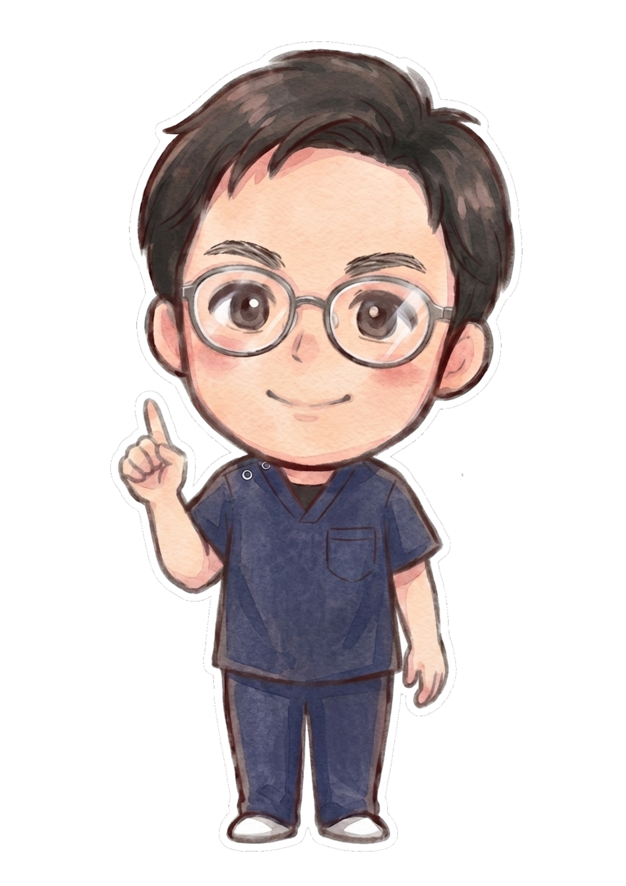

STAFF
あなたを支えるスタッフ紹介
国家資格を持つスタッフが、笑顔でお迎えします。


柔道整復師
岩井 拓磨
つらい痛みに親身に寄り添います。何でもご相談ください。


柔道整復師
村瀬 将之
お一人おひとりの状態に合わせた丁寧な施術を心がけています。
国家資格を持つスタッフが、笑顔でお迎えします。
つらい痛みに親身に寄り添います。何でもご相談ください。

お一人おひとりの状態に合わせた丁寧な施術を心がけています。